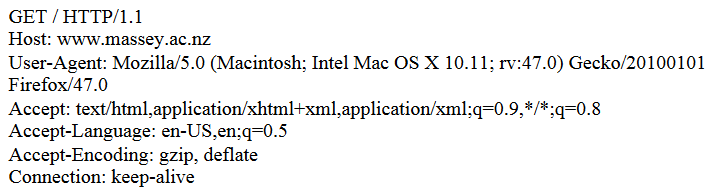

Question 1: HTTP

a) What is the difference between persistent and non-persistent HTTP connection? Is the HTTP connection shown in Listing 1, persistent or non-persistent in nature?
Non-persistent HTTP means that a single object is sent per TCP connection established with the client. With persistent HTTP, multiple objects can be sent through a single connection (the server keeps the connection alive).
In the HTTP request, Connection: keep-alive, is specified and therefore, the connection is persistent.
b) Suppose the page requested by the client has links to 5 images. How many round trips will it take for the browser to request and receive all the images using
i) persistent?
It will take 1RTT to establish a TCP connection with the client, followed by 1RTT per object requested and sent back to the client. That's a total of 6RTT.
ii) non-persistent?
The connection is opened five times, and five objects are sent. That's 5RTT for establishing connections, and an additional 5RTT for sending the objects. That's a total of 10RTT. 5(2RTT)...2RTT per round trip.
NOTE: RTT stands for Round-trip Time

c) The cache control header sent by the server is set to private. How does the browser handle the caching in this case?
The cache control being set to private, indicates to the browser that the cache is intended for a single user, and must not be cached by a shared cache such as a proxy server.
d) Explain how cookies are used to introduce state in web services over a stateless HTTP protocol?
When a client requests a page ideally using a GET request, the server sends the client some session ID, in the form of a cookie. The client's browser then takes the Set-Cookie property value, and stores it as a cookie in the browser. Next time the client requests the host's website, the client's browser will include the cookie in the request header (dependent on the PATH specified in Set-Cookie).
e) A week (May 9th, 2017), the client revisits the same web server with the following HTTP request. Which cookies (if any) will the client send to the server?
GET /massey/app_templates/js/jquery/colorbox/colorbox.css HTTP/1.1
The client will send the 'JSESSIONID' cookie. The other two have expired.
f) Describe a feature of HTTP2, which improves its performance compared to HTTP1?
HTTP2 introduces header compression, which means only the header information that is required, is sent. It also introduces multiplexing which allows byte-streams
g) Statelessness is an architectural constraint advocated by the Representation State Transfer (REST) design. What is an advantage and disadvantage of having stateless client-server interaction?
Not maintaining state makes the server design less complicated, without having to introduce data store for maintaining client information (e.g in memory).